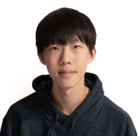

AI + Engineering Instructor
Ruichen Feng
Ruichen R. Feng is a student at Thomas S. Wootton High School in Rockville, Maryland, with a passion for engineering, artificial intelligence, robotics, and STEM education.
He is a Top 3 National Finalist in the 2025-2026 NASA Dream with Us Engineering Challenge, a 3rd Place winner in the 2025 Airborne Robotics Cup International Competition, and a presenter at the 2026 Asian American Scholar Forum AIX Summit, where his research on AI-enabled unmanned aerial systems was accepted for presentation.
His contributions to STEM and youth leadership have also been recognized with the 2026 USCAC AANHP Youth Leadership First Prize, the 2024 Gold Presidential Volunteer Service Award, and the 2026 CYOC Torch Award, presented to only three recipients for outstanding leadership and community impact.
Beyond research, Ruichen is committed to inspiring the next generation of innovators. As co-founder and instructor of the CYOC Summer Engineering Workshop, he has taught 3D printing and engineering design to middle school students since 2025. He is excited to help students develop creativity, technical skills, and the confidence to transform innovative ideas into real-world solutions.